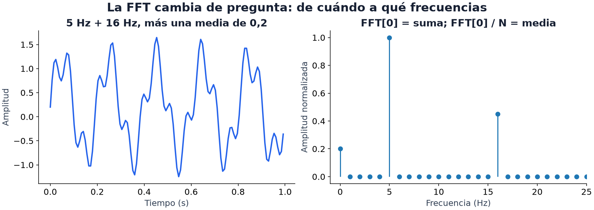

19 · Audio y señales
Nivel 3 — Las modalidades · Ruta de Aprendizaje
Una nota empieza un poco después o suena más fuerte: ¿sigue siendo la misma nota? Cambiar el inicio altera los números de la onda, pero no necesariamente sus frecuencias. Elegir una representación consiste en decidir qué diferencias queremos conservar y cuáles podemos ignorar.
Una muestra registra la amplitud en un instante. La frecuencia de muestreo
fs cuenta muestras por segundo; una frecuencia de 50 Hz describe 50 ciclos
por segundo. Son cantidades distintas: a 1000 muestras por segundo, cada ciclo
de una oscilación de 50 Hz ocupa 20 muestras.
El cuaderno 09 · Lenguaje y audio de Laboratorios guiados muestra la misma señal como onda y espectro; prueba ruido, fase y remuestreo.

La figura combina oscilaciones de 5 y 16 Hz con una constante de 0.2. En el tiempo se superponen; el espectro de amplitud las separa. Aquí la normalización conserva sus amplitudes y la componente cero muestra 0.2. Al graficar solo magnitudes se pierde la fase: el espectro no dice en qué punto del ciclo empezó cada oscilación.
Qué revela una representación de señal
Ventanas, espectro y embeddings resumen aspectos diferentes de una señal. La media capta el desplazamiento del nivel central; no mide por sí sola volumen: una sinusoide puede aumentar su amplitud y seguir teniendo media cero. El promedio de amplitudes al cuadrado, o su raíz (RMS), resumen la magnitud de la onda, pero no el orden de una conversación. Un espectro puede distinguir tonos, pero un promedio global pierde cuándo sonaron. Como en el pooling de los módulos 12 y 16, resumir facilita aprender a cambio de descartar información.
Features de ventana: una referencia rápida
Un modelo clásico puede recibir 10.000 muestras como columnas, pero eso crea
una representación larga y sensible a desplazamientos. Otra opción es resumir
ventanas. Este fragmento usa Features de ventana deslizante y presupone
senal y la función de esa receta:
# ventanas de 128 muestras, avanzando 64 (50% de solapamiento)
F = features_de_ventana(senal, largo=128, paso=64) # (n_ventanas, 5)Cinco números por ventana —media, desviación, mínimo, máximo, energía— y ya tienes una tabla. Después se agrega sobre las ventanas (promedio, máximo, percentiles) para tener un vector por señal, o se clasifica ventana por ventana si la tarea lo pide.
Las ventanas solapadas comparten muestras. Separarlas aleatoriamente puede poner casi el mismo fragmento en train y validación y sobreestimar la capacidad de generalizar. El grupo depende de la pregunta: separar grabaciones evalúa otras grabaciones; separar personas evalúa hablantes nuevos. Los metadatos deciden qué Split por grupo representa el uso esperado.
El dominio de la frecuencia
Dos señales pueden parecerse a simple vista y tener espectros distintos: lo que las separa es qué frecuencias las componen. La receta es Espectro con FFT:
frecuencias, magnitud = espectro(senal, frecuencia_muestreo=1000)
f_dominante = frecuencia_dominante(senal, 1000)Para entradas reales, rfft omite la mitad redundante por simetría conjugada;
no promete exactamente la mitad del tiempo. La componente cero de una FFT sin
normalizar es la suma; dividir por n da la media y tomar magnitud pierde su
signo. La receta frecuencia_dominante ignora esa componente continua.
Convenciones de FFT de NumPy.
Sin agregar ceros, la separación entre bins es fs/n = 1/T, donde T es la
duración observada. Un segundo da bins separados 1 Hz; un cuarto de segundo,
4 Hz. Esa separación no es un límite universal para estimar una frecuencia:
distinguir dos componentes depende también del ruido y de la ventana. Agregar
ceros produce más puntos en el espectro, pero no más tiempo observado.
Ventanas largas permiten estudiar oscilaciones cercanas a costa de mezclar lo
que ocurrió en distintos instantes. Además, una onda muestreada pierde la
identidad de componentes por encima de fs/2: el aliasing puede hacerlas
aparecer como frecuencias menores. Al reducir fs, el remuestreo necesita
filtrar antes las frecuencias que ya no podrá representar.
Espectrogramas: el audio como imagen
Un espectrograma reúne espectros de ventanas sucesivas: un eje es tiempo y el otro frecuencia; sus valores pueden ser magnitud o potencia, según la convención. En el siguiente ejemplo son potencia antes de convertir a decibeles. Esta representación tiene dos ejes, pero no son intercambiables: girarla mezcla tiempo y frecuencia. Una CNN puede procesarla, aunque sus aumentos necesitan respetar el significado físico.
import torch
import torchaudio
espectrograma = torchaudio.transforms.MelSpectrogram(
sample_rate=16000, n_fft=400, hop_length=160, n_mels=64)
db = torchaudio.transforms.AmplitudeToDB()
onda = torch.randn(1, 16000) # 1 segundo a 16 kHz
imagen = db(espectrograma(onda)) # (1, 64, 101): "imagen" de 64 x 101La onda del ejemplo es ruido sintético, no una grabación de habla. La escala mel agrupa frecuencias en bandas más estrechas abajo y más amplias arriba, inspiradas en percepción auditiva. Los decibeles comprimen con un logaritmo el rango de potencias; eso cambia la representación, no garantiza aprendizaje.
hop_length=160 a 16 kHz sitúa cuadros cada 0.01 segundos. La forma termina
en 101 porque el center=True predeterminado rellena los extremos para centrar
ventanas, incluyendo la del instante final. Sin ese relleno, cambia el número
de cuadros. Parámetros de MelSpectrogram.
El Audio Spectrogram Transformer de Operation Night Watch aplica atención a parches de espectrograma. Conecta el módulo 13 con audio sin convertir tiempo y frecuencia en coordenadas visuales arbitrarias.
Encoders de audio preentrenados
El Syllabus IOAI pide HuBERT, Whisper, Qwen-Audio y Voxtral como práctica 💻. Pueden reutilizarse como en el módulo 12, pero no reciben todos la misma entrada. HuBERT procesa una onda mediante su frontend; Whisper usa features log-mel. El procesador del checkpoint resuelve esa preparación, no un espectrograma cualquiera.
Whisper es un encoder-decoder (módulo 13). Sus mitades permiten preguntar cosas distintas:
| Parte | Qué da | Cuándo usarla |
|---|---|---|
| Encoder solo | vectores por cuadro de audio | features para clasificar, agrupar, comparar |
| Encoder + decoder | la transcripción | cuando necesitas el texto |
Eso estaba explícito en Find the Order (2026): el enunciado permitía
wav2vec 2.0, el encoder de Whisper como extractor de features, y Whisper
completo como ASR. Tres opciones con costos muy distintos — y con 10 minutos de
reloj, hay que medir el coste de transcribir y el de extraer features en el
modelo, duración y hardware elegidos.
Qué puede perderse antes de clasificar
Cambiar una variable de 44.100 a 16.000 no remuestrea la onda: 44.100 números seguirían describiendo un segundo, pero el modelo los interpretaría como 2.75625 segundos. Remuestrear cambia la cantidad de muestras conservando la duración y filtrando lo necesario.
El padding también cambia un promedio si no se excluye. Dos estados escalares 2 y 4 promedian 3; agregar un cero y promediar todo da 2. En un encoder real, los estados de padding ni siquiera tienen por qué ser cero. Además, si hubo submuestreo, la máscara de entrada y los estados de salida tienen largos distintos: el pooling necesita la longitud válida de salida.
Un vector global puede servir para reconocer un hablante y perder el orden de sus frases. Una transcripción preserva palabras, pero puede borrar tono, pausas o identidad vocal. Esa pérdida importa al elegir entre encoder y ASR. La comparación tiene sentido si cada vector sigue asociado al audio y la etiqueta que lo originaron, incluso al barajar los lotes.
La práctica con pesos reales requiere un checkpoint y su procesador preparados; el laboratorio sintético enseña transformaciones y evaluación, sin afirmar que haya ejecutado HuBERT o Whisper.
La cadena completa de una tarea de audio
audio crudo
├─► features de señal (ventanas + espectro) ─► modelo clásico
├─► espectrograma ─────────────────────────► CNN / Transformer
└─► encoder preentrenado ──────────────────► vectores ─► clasificador
Estos caminos conservan distintas señales. Una frecuencia dominante puede bastar para distinguir tonos; no suele bastar para entender quién respondió a quién. El tamaño del modelo no decide por sí solo la representación adecuada.
⚠️ Las tres trampas
1. Frecuencia de muestreo distinta. Cada modelo espera la suya —Whisper y HuBERT usan habitualmente 16 kHz— y los datos pueden venir a otra tasa (Find the Order traía audio mono a 44.1 kHz). Según la API, una tasa incorrecta puede ser rechazada o interpretada mal. Consulta el procesador del checkpoint, no una regla general sobre «audio». Entrada de HuBERT.
2. Largos variables. Los audios no miden todos igual. Hay que hacer padding o recortar, y si haces padding, enmascarar en el pooling (módulo 12).
3. Validar por muestra en vez de por señal. La trampa de la que hablamos arriba, y merece repetirse: si una misma grabación aporta 200 ventanas, esas 200 filas no son 200 ejemplos independientes. Split por grupo.
🏋️ Práctica
| # | Ejercicio | Fuente | Qué practica |
|---|---|---|---|
| 1 | HuggingFace Audio Course, capítulos 1-4 | huggingface.co/learn | representaciones y modelos de audio |
| 2 | Genera señales sintéticas de frecuencia conocida y recupérala con la FFT | Espectro con FFT | que el espectro deje de ser magia |
| 3 | ⭐⭐ Radar: features de señal + clasificador clásico | repo oficial | señal convertida en clasificación espacial |
| 4 | Clasifica sonidos con espectrograma + CNN, y compara con encoder congelado | — | los dos caminos, medidos |
| 5 | ⭐ Operation Night Watch: 13 clases nuevas sin olvidar 16 | abrir en Colab | audio + olvido catastrófico |
| 6 | Whisper o Shout: clasificar volumen del habla | OlimpiadaAI III | problema nacional de audio |
Al comparar separación aleatoria y por grupo, pregunta qué generalización mide cada una. Una diferencia no es por sí sola prueba de fuga: también puede reflejar que predecir para un nuevo origen es un problema más difícil.
🎯 Mini-desafío (formato IOAI)
Tarea: Find the Order (IOAI 2026, día 1), completa. Métrica: exactitud de orden por pares, promediada por diálogo. Límite: 10 minutos de reloj, cubriendo todo. Modelos permitidos:
wav2vec 2.0, encoder de Whisper, Whisper como ASR,Qwen2.5-0.5B.Puedes buscar pistas acústicas (pausas, duración), relaciones entre embeddings o continuidad entre transcripciones. Cada hipótesis pierde información distinta y tiene un costo que depende del modelo y los audios.
La salida es el rango cronológico de cada chunk en el orden de entrada. Si el orden temporal es
[chunk2, chunk0, chunk1], los rangos son[1, 2, 0]; devolver[2, 0, 1]confundiría una permutación con su inversa. Con tres chunks hay tres pares: invertir uno da 2/3 de exactitud en ese diálogo. Así se entiende qué premia la métrica, sin suponer que una heurística barata vaya a ordenar bien.En el Individual 2026 (440 concursantes), la media fue 9.7/100 y el 70% obtuvo cero. Potato tuvo media 8.2: estos datos describen rendimiento observado, no ordenan dificultad intrínseca ni identifican causas de los ceros.
Para poner a prueba la intuición
Duplica la duración de una señal sin cambiar su frecuencia: ¿qué cambia en la FFT?
¿Cuándo separar ventanas aleatoriamente da una impresión engañosa del resultado?
Compara un clasificador de espectro con uno de ondas crudas al cambiar fase, ruido y frecuencia de muestreo.
← 18 - Texto · Ruta de Aprendizaje · 20 - Modelos generativos →